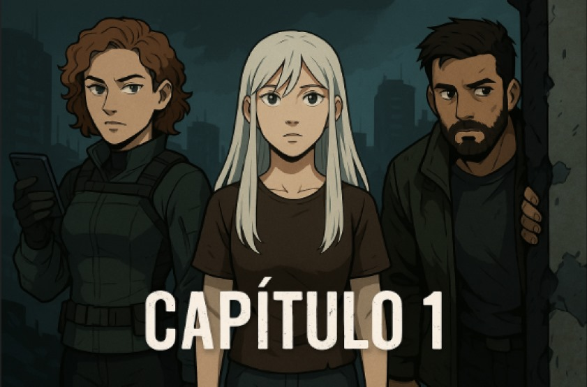
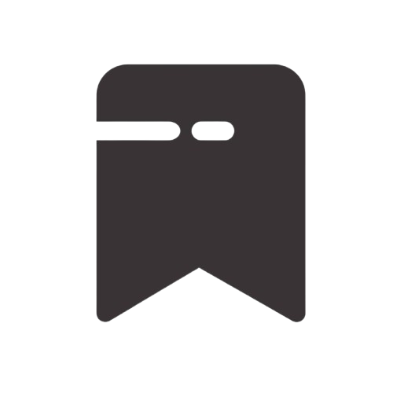
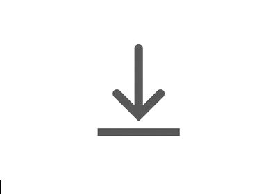

<!DOCTYPE html>
<html lang="en">
<head>
    <meta charset="UTF-8">
    <meta name="viewport" content="width=device-width, initial-scale=1.0">
    <title>Document</title>
    <link rel="stylesheet" href="./Estilos/styleCapitulos.css">
</head>
<body>
    <div class="container"></div>
    <!-- <div class="body"> 
        <div class="imagen">
            
            <button class="boton-volver-comic">←</button> 
            <button class="boton-volver-pagina-principal">×</button>  
            <button class="boton-inicio">▶</button>
        </div>
        <div class="seccion-2">
            <div class="info-cap"> 
                 <div class="etiquetas">
                     <h1 class="año">2025</h1><br>
                     <p>Comic Digital Interactivo</p>
                     <div class="dos">
                         <p class="cuadro-rojo">+17</p>
                          <p>| Violencia, abuso</p>
                    </div>
                 </div>
                 <div class="etiquetas-2">
                    <div class="estrellas">
                         <p>calificacion |</p>
                          
                    </div>
                    <div class="ultima-etiqueta">
                         <p>Género</p>
                         <p>| Distopía, Ciencia ficción, Drama</p>
                    </div>
                 </div>
            </div><br>
            <div class="nombre-y-descripcion">
                <h2>T1:E01</h2><br><br>
                <h1>"Saldo Actualizado"</h1><br> 
                <p class="descripcion-cap">Zaya descubre que su saldo ha sido actualizado a NEGATIVO, quedando fuera del sistema. Pierde el acceso a comida, estudios y refugio, enfrentando por primera vez el vacío y la invisibilidad de ser una “olvidada” en Cárdena.</p>
            </div>
            <div class="boton-mas-cap">
                   <button class="ultimo-boton">Ver más episodios ↷</button>
            </div>
            <div class="menu-volver-bottom">
                
                
                
            </div>
        </div>
    </div> -->
    <script src="./javascript/bd.js"></script>
    <script src="./javascript/capitulo.js"></script>
</body>
</html>